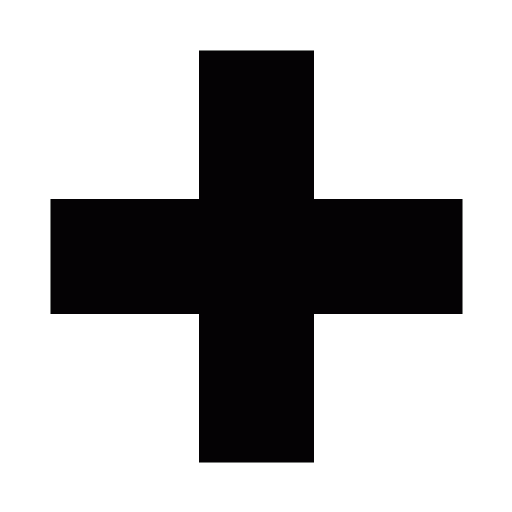

Üdvözlünk a RJSX weboldalán
A rövid ismertető megmutatja hogyan kell használni e API-t az Ön weboldalán
A példa
itt
található
Dokumentáció:
itt
található
Az RJSX7 számos újítást hozott a kódkészítésben.
Az első példa, az hogy végleg elhagyjuk a
.rjsx kiterjesztést, helyette a megszokott
.js-re váltunk. Az rjsx7 célja többek közt a szabványosítás
Az RJSX integrálása az oldalba
először a központi file-t kell belinkelnie a DOKUMENTUM VÉGÉRE:
<script src="http://rontap.netne.net/rontap/main.js"
type="text/javascript"></script>
Majd egy scriptben meg kell adnia pár adatot.:
<script>
navname="RonTapSites API";
coa=false;
moretag=true;
manimg='http://rontap.netne.net/rontap/f_icons/browser.svg';
rjsxlocation='http://rontap.netne.net/rontap/';
specnav=true;
specnavi=["oldal1","oldal2"];
specnavil=["link.html","index.html"];
</script>
sorban a változók:
navname: Az a név, ami a navigációnál az oldal neveként jelenik megcoa: kompatibilitás. ha nem fog sokáig frissülni az oldalt, ajánlott true-ra állítanimoretag: RTS tag generálása (fontos!)manimg: ezzel lehet ikont választani. ajánlott a képkészletünkből válogatnirjsxlocation: az a hely, ahonnan az RJSX a továbbiakban be fog töltődnispecnav: FONTOS!! E nélkül nem fog működni a speciális navigációspecnavi: ez egy tömb, aminek az elemei majd a linkeken a feliratok lesznek (ajánlott max 6db)specnavil:ez a linkeket tárolja, ugyanannyi elemnek kell lennie benne mint a spenavi-ban.holotheme : amennyiben igaz, sötét lesz a téma- opcionális: Design kiválasztása:
rjsxThemeOnSite . 0 / 1 / 2 lehet az értéke. Ezzel lehet a design-t választani
Majd a body helyére irja csak be:
<body id="body">
<rts>
Letöltés
Bár ajánlott az rjsx legaktuálisabb változatát használni, a teljes kód letölthető:
Régebbi verziók:
(14.02.17.)
(13.12.12.)
(13.11.23.)
A
példaoldalon megtekintheti a design opciókat.
AZ OLDAL TOVÁBBI RÉSZE FRISSÍTÉS ALATT ÁLL
Az API szerepe nagyon fontos.
Az itteni menüpontokra kattintva részletesen megtudhatja az rtsapi működését.
Mind személyreszabhatósági szempontból, mind hasznossági szempontból érdemes átnézni.
A main.rjsx Egy folyamatosan bővülő függvénykönyvtár.
Jelenleg a következő függvények találhatóak meg benne:
exists('változó') TRUE ha létezik a változó, FALSE ha nem
x('objektum_azonosító') kiűriti a megadott objektum tartalmát
gox('url') átirányít
rdr('url') átirányít, de nem kell a '.html'
Repaint() frissíti a weboldal TARTALMÁT (magát a weboldalt nem)
die() hiba esetén megöli a weboldalt.
$KeyCode('event') lenyomott billentyű (inputnál az első karakter)
$FindInArray('mit','tömb') tömbben keres, far[] tömbben kapjuk vissza az eredményt
Fontos változók
Fontos változók a rjsx-ben
yo konstans, debug céljából fenntartva. tartalma 'It Works!'
rjsx.ver és rjsx.verpc A RJSX verziószáma, a rjsx_verpc egy számként adja vissza
iekill alapértelmezetten true, letiltja az internet explorert, és átirányítja az 'ie.html'-re
coa kompatibilitási ágens, jelenleg be kell kapcsolni
rjsx.ua UserAgent. Ha 0, akkor letiltja. Ha 1 akkor mobil nézet. Ha 2 akkor támogatott böngészőről van szó. Ha 3 akkor nem ismerte fel a böngészőt
rjsxlocation szűkséges, a teljes elérési utat tartalmaznia kell [ajánlott a http://rontap.netne.net/rontap/ használata]
rts.rjsx bővítmény változói
minrjsx_ver minimális RJSX amivel működik
specnav A már fennt említett változó
manimg az oldalon lévő kép. Ha üres, akkor kompatibilitási mód bekapcsol.
localStorage.rts_color a weboldal színe. érvényes szín: 'feher','fekete','kek','sarga','lila'
localStorage.rts_night éjszakai mód
localStorage.rts_mobile ha TRUE akkor a mobil változatra irányít át
localStorage.rts_fancyHa a ...rts_mobile TRUE akkor ez autómatikusan false. ha ez FALSE akkor nem töltődik be a animációs css file
rjsx_nonev2 személyreszabás: ha van értéke (bármi) akkor a felső sötét sáv nem fog megjelenni. nem kell megadni
rjsx_nohomepage személyreszabás: ha van értéke (bármi) akkor a menüben a kezdőlap linkje nem fog megjelenni. nem kell megadni
Az RJSX Creative Commons BY-NC-SA licenc alatt Áll!